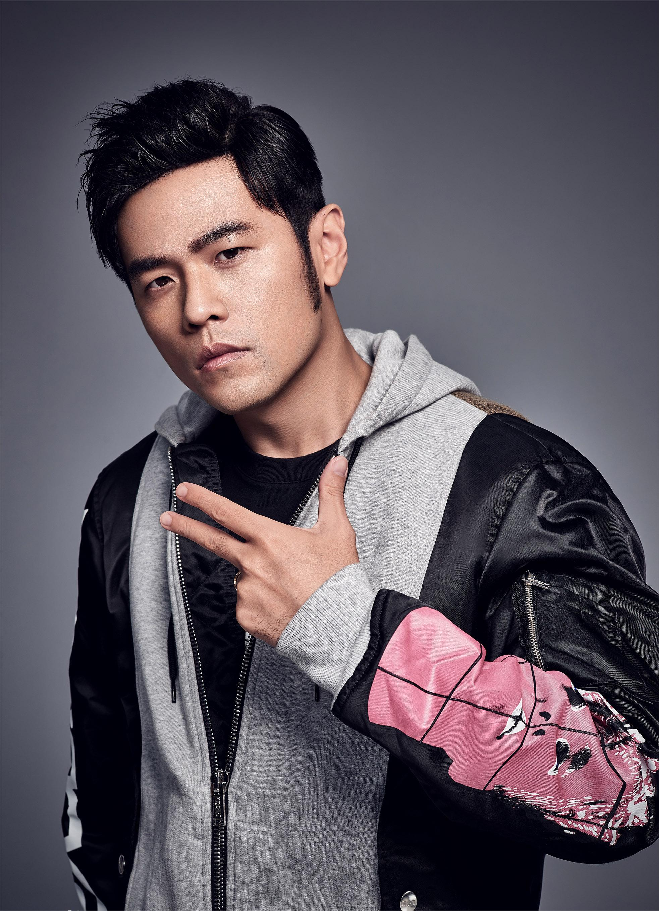
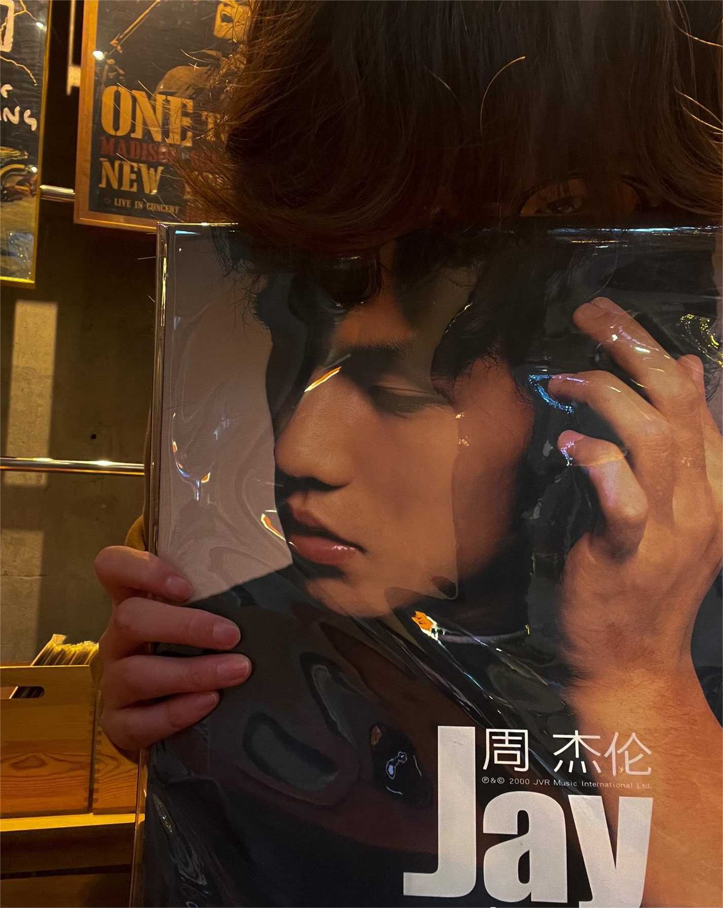
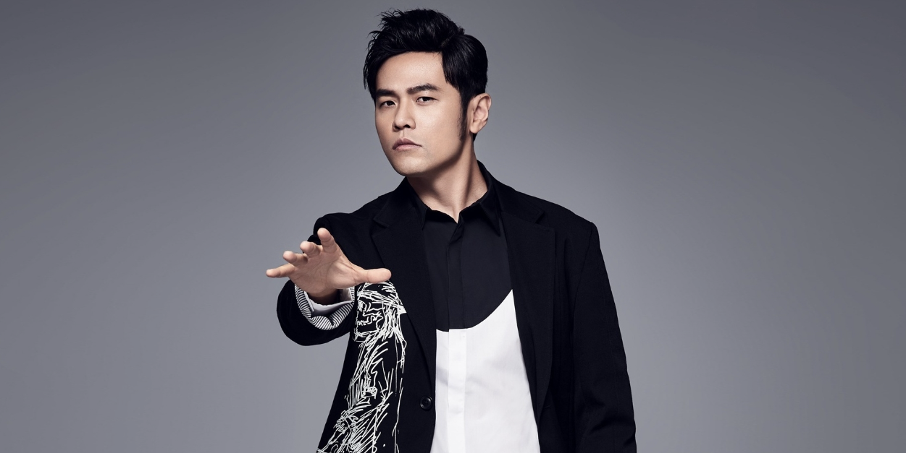

个人简介
周杰伦，1979年1月18日出生于台湾省新北市，华语流行男歌手、音乐人、演员、导演、编剧、监制。被誉为"亚洲流行天王"
祖籍
福建省泉州市永春县
毕业中学
淡江中学
音乐方面
-
发售专辑
第一张专辑《JAY》
音乐成就:
- 发行了多张畅销专辑，其中包括《Jay》、《Fantasy》、《十一月的萧邦》等。
- 曾获得多个音乐奖项，包括金曲奖、世界音乐大奖等。
- 作曲风格独特，融合了流行、摇滚、嘻哈、电子等多种音乐元素。
- 歌曲《稻香》、《晴天》、《告白气球》等广为人知。
-
专辑列表
- 《Jay》 (2000)
- 《范特西》 (2001)
- 《八度空间》 (2002)
- 《叶惠美》 (2003)
- 《七里香》 (2004)
- 《十一月的肖邦》 (2005)
- 《依然范特西》 (2006)
- 《我很忙》 (2007)
- 《魔杰座》 (2008)>
- 《跨时代》 (2010)
- 《惊叹号》 (2011)
- 《十二新作》 (2012)
- 《哎呦，不错哦》 (2014)
- 《周杰伦的床边故事》 (2016)
- 《地表最强3》 (2016)
- 《等你下课》 (2017)
- 《说好不哭》 (2019)
- 《等你下课 (Movie Ver.)》 (2019)
- 《Mojito》 (2020)
- 《周杰伦的告白气球》 (2021)
- 《等你下课 (Live)》 (2021)
获奖经历
周杰伦作为一位杰出的音乐人，获得了许多重要的音乐奖项和荣誉。以下是周杰伦获得的一些代表性奖项
-
金曲奖
- 最佳男歌手（2005、2007、2010）
- 最佳流行男歌手（2005、2007、2010）
- 最佳作曲人奖（2001、2002、2003、2004、2007、2013）
- 最佳年度专辑奖（2001、2003、2004、2005、2007、2010）
亚洲音乐大奖
- 最佳男歌手奖（2002、2003、2006）
- 最佳作曲奖（2002、2006）
演唱会巡回
地表最强世界巡回演唱会
- 2018年 - 亚洲各大城市
- 2019年 - 欧洲巡演
- 2020年 - 美洲巡回
参考资料
如需了解更多关于周杰伦的信息，请参考以下资料：